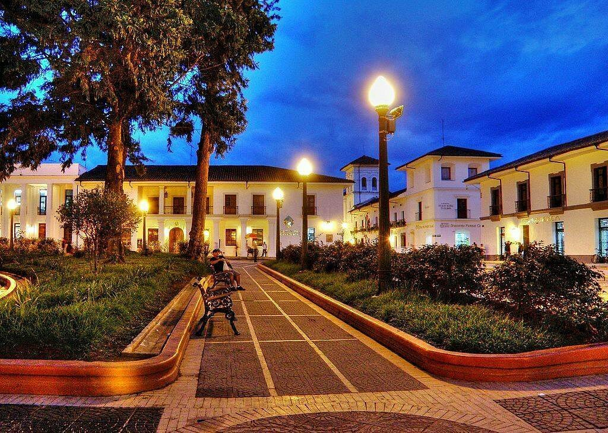
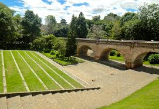
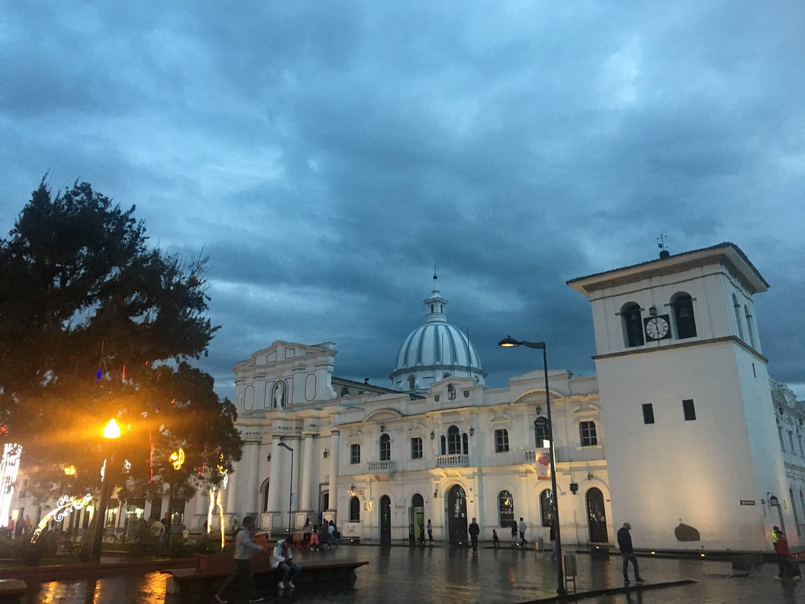
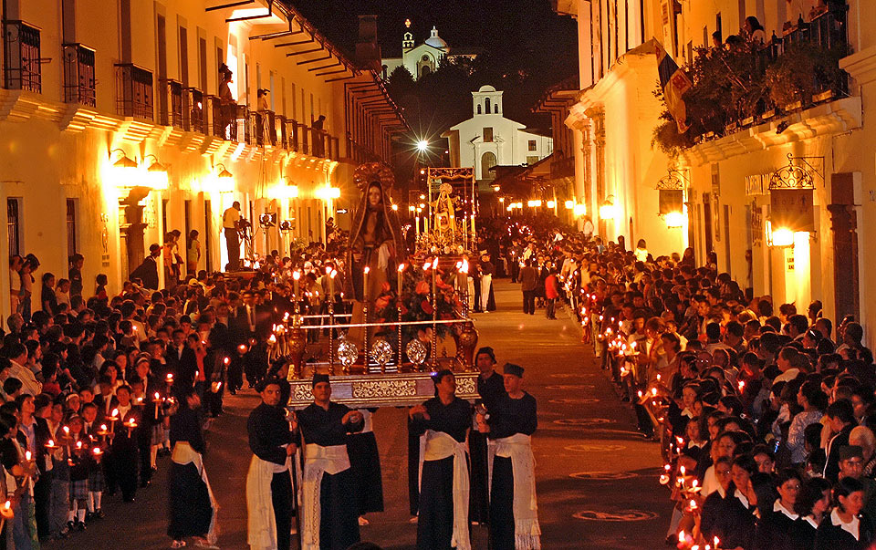
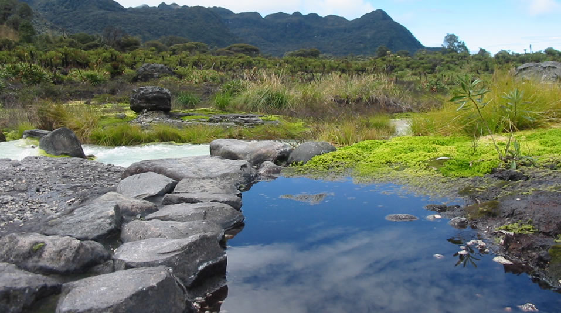
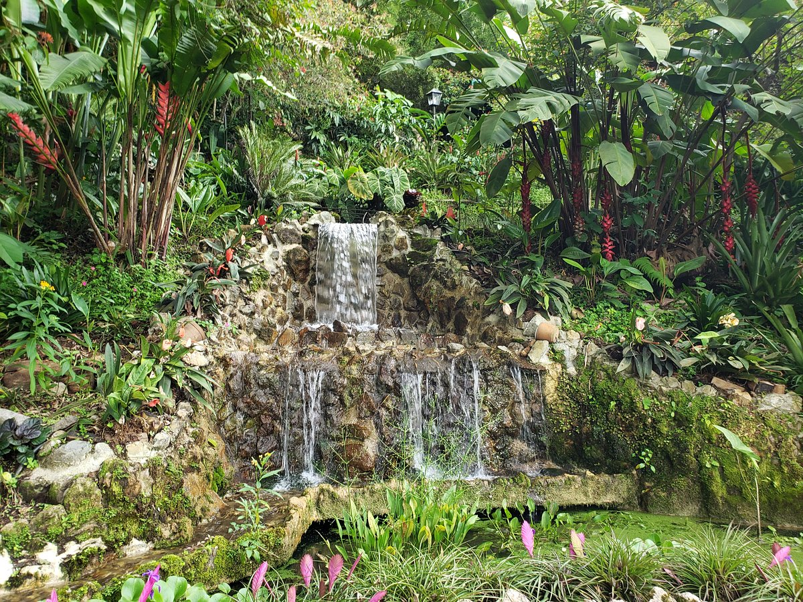
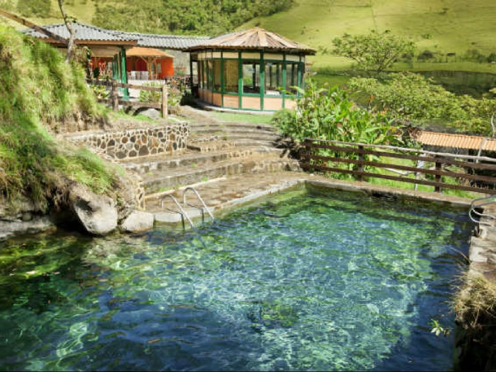
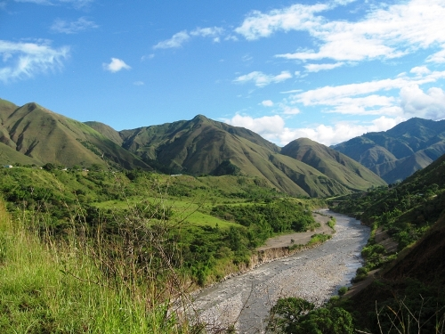

Turismo
El Cauca es un destino con una mezcla única de historia, naturaleza y cultura. Aquí tienes algunos de los principales atractivos turísticos que puedes visitar:
🌆 Popayán – La Ciudad Blanca
- Centro Histórico: Sus calles coloniales y casonas blancas la convierten en una de las ciudades más hermosas de Colombia.
- Puente del Humilladero: Un ícono de la ciudad, perfecto para una caminata con vistas.
- Torre del Reloj: Llamada "La nariz de Popayán", es un símbolo de la ciudad.
- Parque Caldas: El corazón de la ciudad, rodeado de arquitectura colonial.
- Semana Santa: Declarada Patrimonio Cultural Inmaterial de la Humanidad por la UNESCO.





⛰️ Naturaleza y Aventura
- Parque Nacional Natural Puracé: Hogar del Volcán Puracé, fuentes termales y una biodiversidad increíble. Se pueden ver cóndores andinos.
- Reserva Natural de Nirvana: Ideal para senderismo y avistamiento de aves.
- Termales de Coconuco: Perfectos para relajarse en aguas termales en un entorno natural.
- Río Páez: Popular para el rafting y otras actividades de aventura.



